We had asked our guide to take us to somewhere 'different'. A day's sailing took us far from Alleppey to a temple called Arivukadu ('Forest of Knowledge') - as it contains many educational institutions - and also Aravukadu ('Killing Place'). The Sreedevi Temple is the most renowned in South India and is located at Punnapra. There is a myth regarding the origin of the temple which says that the goddess Bhadrakali came into being in order to kill the cruel demon (asura) who tyrannically ruled the place. The spot reddened with the evil blood of the demon is called asurampuzha. The holy sword of the goddess, which killed the demon, is washed in the Temple pond nearby (but we never got to see it).. !
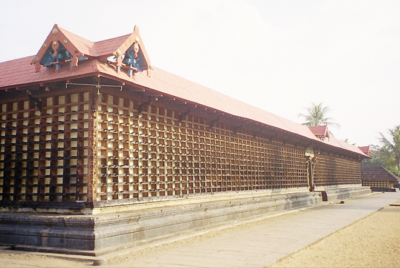
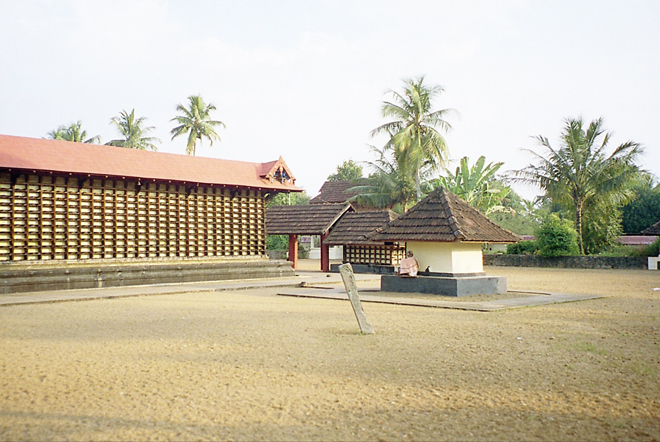
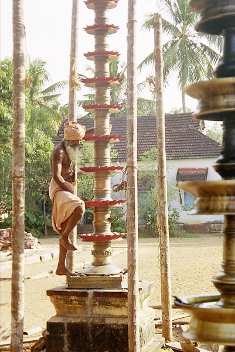
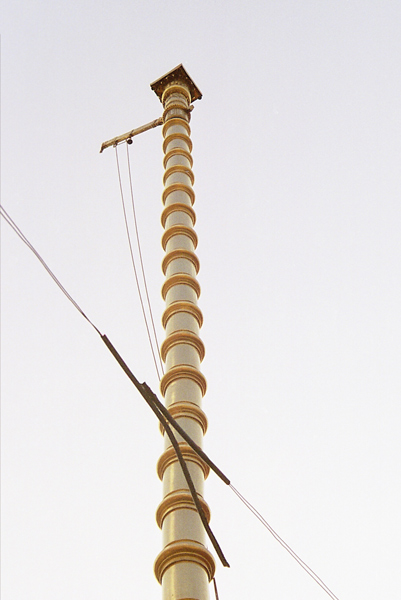
The Festival of Temple starts in the Malayalam month of “Meenum” for ten days. People from various parts of the state come to the Temple to witness the various Festivities and Programmes. Thiripidutham, (Holding of the Lighted Torch) is a very important offering in which thousands of devotees participate. On the tenth day of the Festival after the Deeparadhana, devotees take a dip in the Temple Pond and come before the temple in wet clothes. The Poojari gives a lighted torch to the devotees and they go round the Temple in Prathikshna. It is their belief that all their Prayers will be granted by performing this particular offering... !
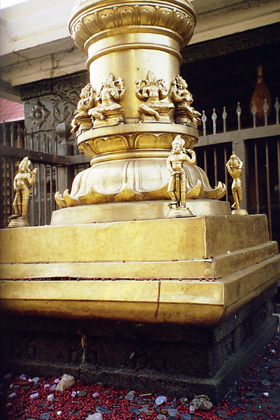
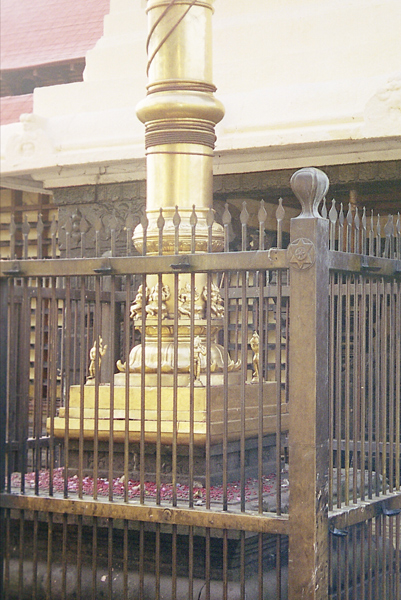
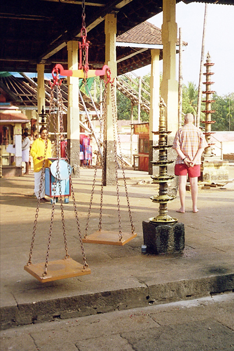
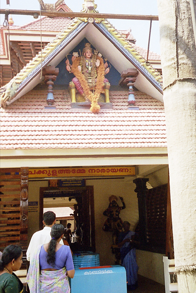
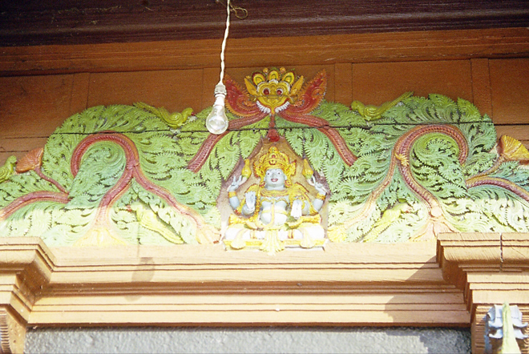
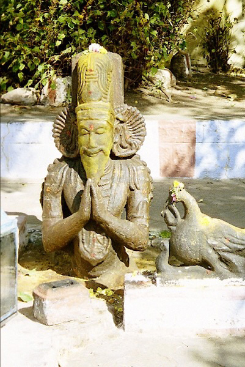
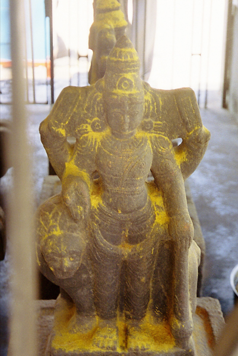
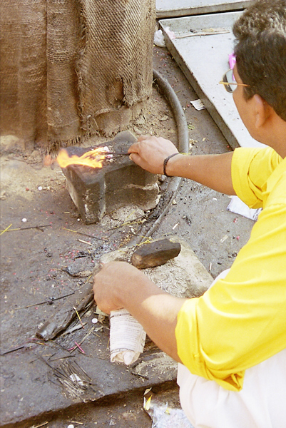
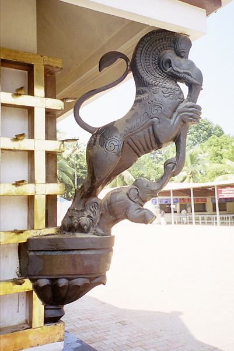
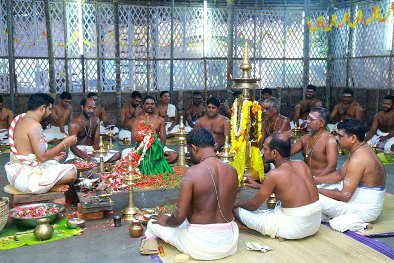
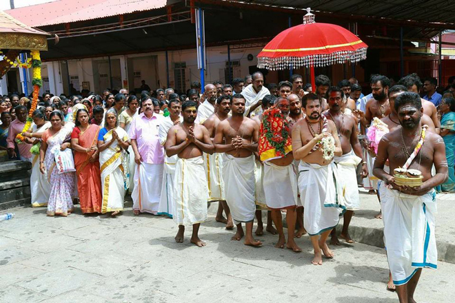
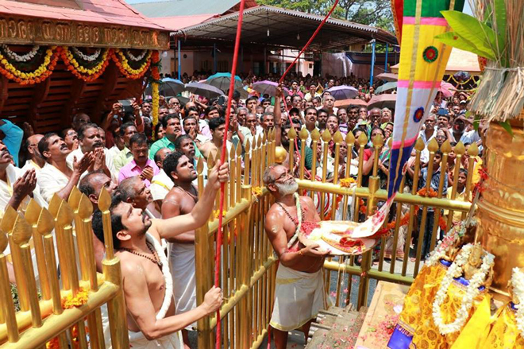
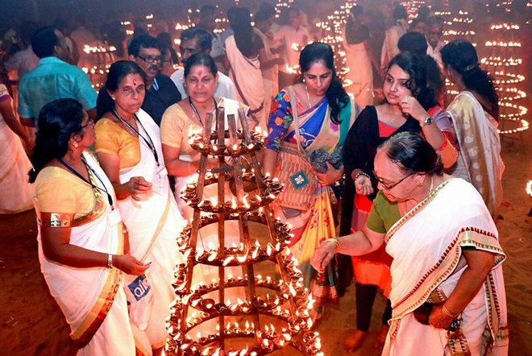
On the way back to Alleppey we passed another religious site but the crew on the boat sadly couldn't tell us anything about it. On further investigation it turns out to be the black granite 11th century Karumadi Kuttan (literally 'boy from Karumady') Buddha image. This is set just near the canal bank. Visited by the Dalai Lama in 1965, it was discovered in the 1930s by Sir Robert Bristow, a colonial British engineer. Currently the statue is under the protection of the Kerala State Government. The left side of the statue is missing and is subject to historical debate as to the reason for its partial destruction.
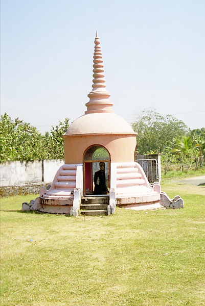
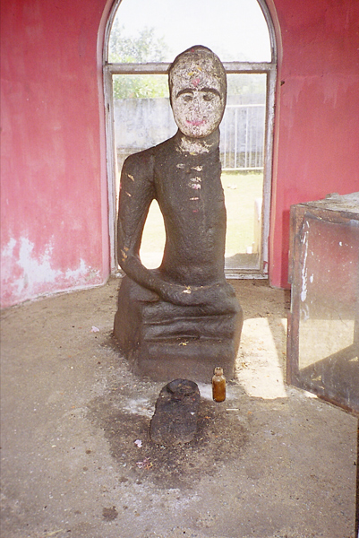
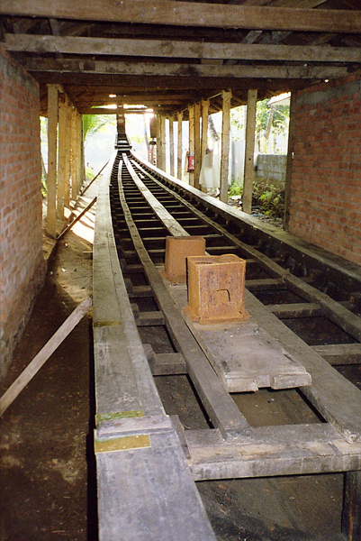
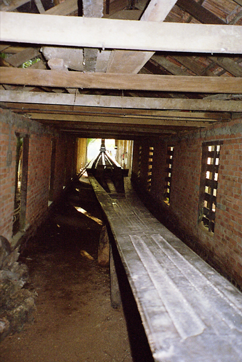
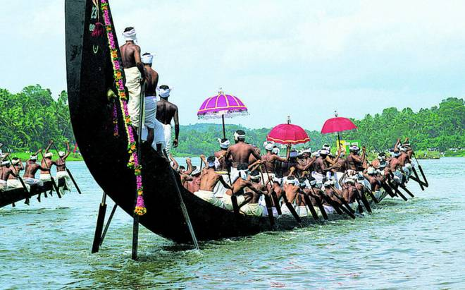
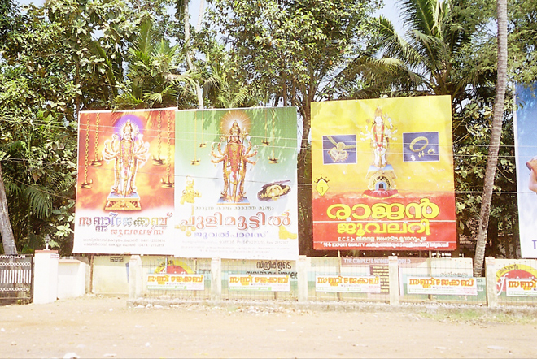
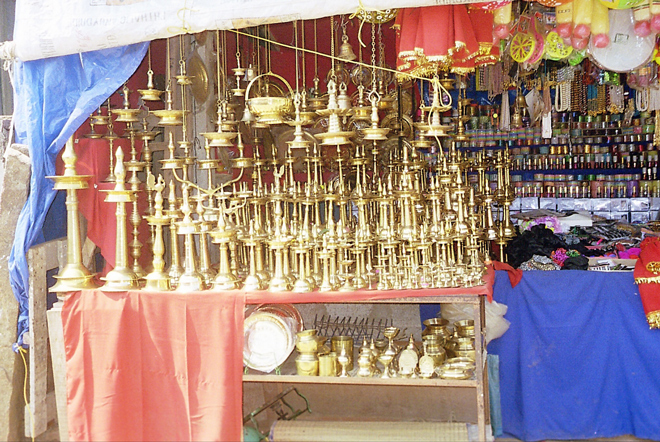
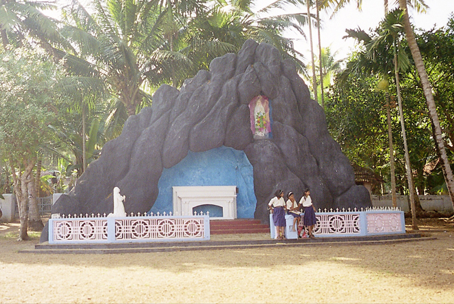